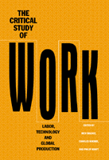

<body bgcolor="#FFFFFF" text="#000000" link="#0000FF" vlink="#CC0000" alink="#CC0000"><center><hr width="350" size="1" align="center" noshade>Essays that challenge the benefits of globalization and new technologies<hr width="350" size="1" align="center" noshade><p><a href="https://cdcshoppingcart.uchicago.edu/Cart/ChicagoBook.aspx?ISBN=9781566397971&&PRESS=temple" target="_top">Buy this book!</a> | <a href="https://cdcshoppingcart.uchicago.edu/Cart/Cart.aspx?PRESS=temple" target="_top">View Cart</a> | <a href="https://cdcshoppingcart.uchicago.edu/Cart/Cart.aspx?PRESS=temple" target="_top">Check Out</a></p><p></p></center><!--none//--><h1>The Critical Study of Work</h1>
<H2>Labor, Technology, and Global Production</H2>
<h3>edited by Rick Baldoz, Charles Koeber and Philip Kraft</h3>
<P>cloth 1-56639-797-9 $95.50, Mar 01, <FONT COLOR=#990033>Available</FONT>
<br>paper 1-56639-798-7 $39.95, Mar 01, <FONT COLOR=#990033>Available</FONT>
<br>Electronic Book 1-59213-809-8 $39.95 <FONT COLOR=#990033>Available</FONT>
<BR> 296 pp
7x10
4&nbsp;tables 1&nbsp;figure
</P><BLOCKQUOTE><I>"This volume presents innovative, comparative case studies of work and the politics of labor around the world. Moving the field of labor process studies onto new conceptual terrain, </I>The Critical Study of Work<I> should be required reading for anyone seeking to understand globalization and how it shapes and connects work experiences in offices, retail establishments, homes, and factories."</I>
<br>&#151<b>Vicki Smith</b>, Professor of Sociology, University of California, Davis, and author of <I>Crossing the Great Divide: Worker Risk and Opportunity in the New Economy</I><I></I></BLOCKQUOTE>
<p>Two broad developments reshaped work at the end of the twentieth century. The first was the implosion of the Soviet Union and the worldwide triumph of market capitalism. The second was the increasing use of computer-based production technologies and management command-and-control systems. How do we make sense of these important developments?
<p>The editors have assembled a collection of provocative, original essays on work and workplaces throughout the world that challenge the current celebration of globalization and new technologies. Building on labor process analysis, individual case studies venture beyond factory and office to examine "virtual" workplaces, computer-era cottage work, and emotional and household labor. The settings range from Indian and Irish software factories to Brazilian supermarkets, Los Angeles sweatshops, and Taiwanese department stores.
<p>Other essays seek to make theoretical sense of increasingly de-centered production chains, fluid work relations, and uncertain employment. Individually and collectively the authors construct a new critical study of work, highlighting the connections between geography, technology, gender, race, and class. They offer an accessible and flexible approach to the study of workplace relations and production organization&#151and even the notion of work itself.
<BR>&nbsp;<h2>Excerpt</h2><P>Excerpt available at <a href="http://www.temple.edu/tempress">www.temple.edu/tempress</a></p>
<BR>&nbsp;<h2>Reviews</h2>
<p><i>"[A]n important contribution to the literature on labor, labor relations, labor process, labor value, globalization and technology and work."</i>
<br>&#151<b><i>Anthropology of Work Review</i></b>
<p><i>"This edited collection will be of interest to scholars curious about the theoretical development and recent empirical research in labour process analysis.... The qualitative/ ethnographic methodologies employed in these labour process analyses yield valuable insights into the real experiences of workers confronting the forces of global market capitalism."</i>
<br>&#151<b><i><a href="http://www.cjsonline.ca/reviews/critwork.html" target="new">Canadian Journal of Sociology Online</a></i></b>
<p>Read a <a href="../authors/1546_review.pdf">review</a> from <I>Processed World</I>, 2.001, written by Chris Carlsson (pdf).
<p>Read a <a href="http://jwsr.ucr.edu/archive/vol10/number2/pdf/jwsr-v10n2-brevs.pdf">review</a> from <I>Journal of World-Systems Research</I>, Volume 10.2, (Summer 2004), written by Leslie C. Gates (pdf).
<p><i>"The overall quality of the contributions is outstanding and Baldoz, Koeber and Kraft deserve high marks for assembling work that will interest scholars and stimulate undergraduates and learned nonspecialists."</i>
<br>&#151<b><i>Social Forces</i></b>
<BR>&nbsp;<h2>Contents</h2><P>
<p>Acknowledgments
<br>Introduction: Making Sense of Work in the 21st Century &#150 Rick Baldoz, Charles Koeber, and Philip Kraft.
<p><b>Part I: Continuity and Change</b>
<br>1. Dwelling in Capitalism, Traveling Through Socialism &#150 Michael Burawoy
<br>2. Do Capitalist Matter in the Capitalist Labor Process? Collective Capacities, Group Interest, and Management Prerogatives, C. 1886-1904 &#150 Jeffrey Haydu
<p><b>Part II: Service and Service Sector Workers</b>
<br>3. Gender, Race, and the Organization of Reproductive Labor &#150 Evelyn Nakano Glenn
<br>4. The Body as a Contested Terrain for Labor Control: Cosmetics Retailers in Department Stores and Direct Selling &#150 Pei-Chia Lan
<br>5. Silent Rebellions in Capitalist Paradise: A Brazil-Quebec Comparison &#150 Angelo Soares
<p><b>Part III. Production and Industrial Workers</b>
<br>6. Flexible Despotisms: The Intensification of Insecurity and Uncertainty in the Lives of Silicon Valley�s High-Tech Assembly Workers &#150 Jennifer Chun
<br>7. The Challenge of Organizing in a Globalized/Flexible Industry: The Case of the Apparel Industry in Los Angeles &#150 Edna Bonacich
<br>8. Transcending Taylorism and Fordism? Three Decades of Work Restructuring &#150 James Rinehart
<br>9. Manufacturing Compromise: The Dynamics of Race and Class Among South African Shop Stewards in the 1990s &#150 Edward Webster
<p><b>Part IV. Professional and Technical Workers</b>
<br>10. "Globalization": The Next Tactic in the Fifty Year Struggle of Labor and Capital in Software Production &#150 Richard Sharpe
<br>11. Controlling Technical Workers in Alternative Work Arrangements: Rethinking the Work Contract &#150 Peter Whalley and Peter Meiksins
<br>12. Net-Working for a Living: Irish Software Developers in the Global Workplace &#150 Se�n ӒRiain
<p>About the Contributors
</P><BR>&nbsp;<H2>About the Author(s)</H2>
<P><b>Rick Baldoz</b> is Assistant Professor of Sociology at the University of Hawaii.</P>
<P><b>Charles Koeber</b> is Assistant Professor of Sociology at Wichita State University.</P>
<P><b>Philip Kraft</b> is Associate Professor of Sociology at SUNY Binghamton.</P>
<P>Contributors: Michael Burawoy, Jeffrey Haydu, Evelyn Nakano Glenn, Pei-Chia Lan, Angelo Soares, Jennifer JiHye Chun, Edna Bonacich, James Rinehart, Edward Webster, Richard Sharpe, Peter Meiksins and Peter Whalley, Se�n � Riain, and the editors.</P>
<BR><H2>Subject Categories</H2>
<p><A HREF="/tempress/labor.html" TARGET="_top">Labor Studies and Work</a>
<BR><A HREF="/tempress/sociology.html" TARGET="_top">Sociology</a>
</p>
<p align="center"><a href="https://cdcshoppingcart.uchicago.edu/Cart/ChicagoBook.aspx?ISBN=9781566397971&&PRESS=temple" target="_top">Buy this book!</a> | <a href="https://cdcshoppingcart.uchicago.edu/Cart/Cart.aspx?PRESS=temple" target="_top">View Cart</a> | <a href="https://cdcshoppingcart.uchicago.edu/Cart/Cart.aspx?PRESS=temple" target="_top">Check Out</a></p><p><font face="Arial" size="1"><a href="copyright.html" onMouseOver="window.status='Web Copyright Policy';return true;" onMouseOut="window.status=''" title="Web Copyright Policy">&copy;</a> 2015 <a href="http://www.temple.edu" target="new" onMouseOver="window.status='Link to Temple University home page';return true;" onMouseOut="window.status=''" title="Link to Temple University home page">Temple University</a>. All Rights Reserved. http://www.temple.edu/tempress/titles/1546_reg.html</font></p>